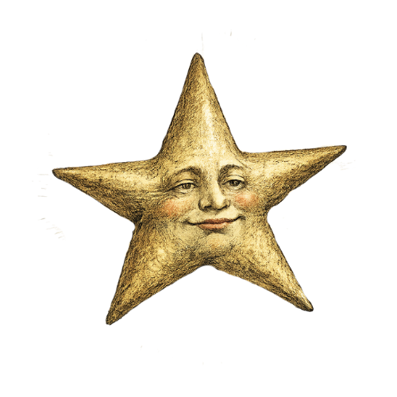
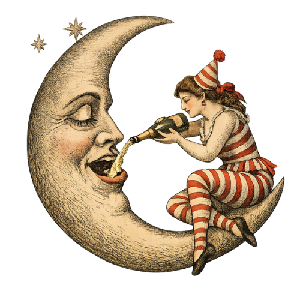
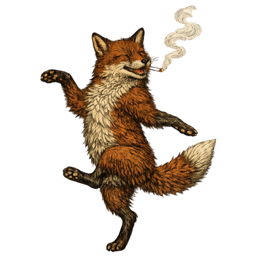
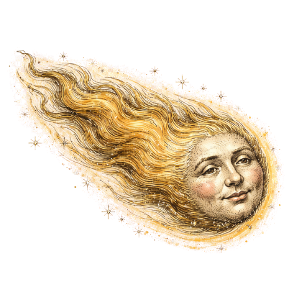
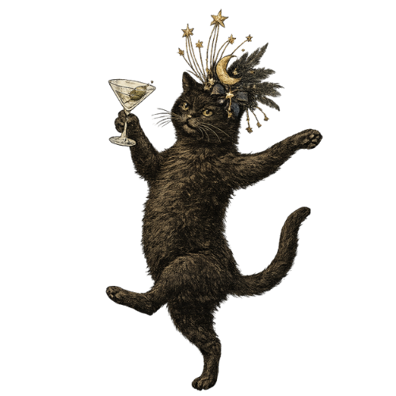
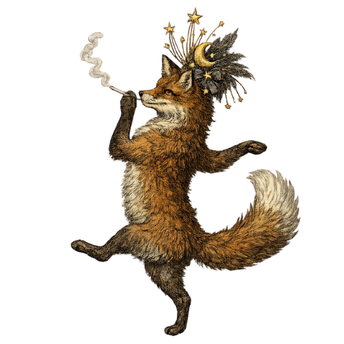
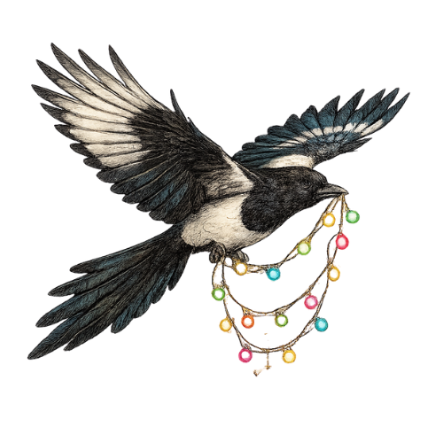
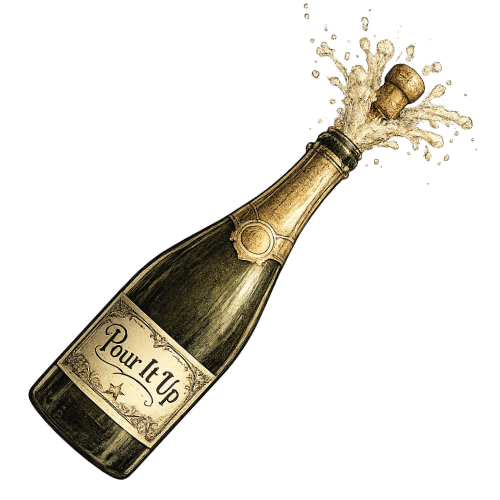

A Celestial Midsummer Night's Dream
A Farm Birthday Celebration at Seaswept Farm
As summer skies begin to glow with stars, you are warmly invited to a night of magic and moonlit celebration on the Cornish coast.
On Saturday 22 August 2026, we gather at Seaswept Farm near Mousehole to celebrate the milestone birthdays of Eloise and Juliette (50), and Liz (40). The farm will transform into a whimsical midsummer dream — a realm where lantern light dances like faerie fire, music drifts on enchanted breezes, and the horizon stretches into twilight's spell.
Camping is available from Friday 21 August through the weekend — and you're warmly welcome to tarry awhile, to wander hidden coves, follow winding coast paths, and discover the quiet magic woven through this beautiful corner of Cornwall.
Set within a protected National Landscape, Seaswept Farm offers sweeping sea views beneath wide Cornish skies. As dusk falls, gather around glowing fire pits for late-night reverie, surrender to music and dancing, and savour the rare enchantment that comes with a night beneath the stars.
Expect:
- Wildflower meadows swaying in the salt-kissed air
- Slumber under the watch of moon and stars
- Firelit circles and twilight tales
- Music rising like an incantation on the evening breeze
- BBQ feasts and wandering food trucks
A winding footpath leads from the farm to the harbour village of Mousehole, where welcoming inns, curious shops, and timeless seaside charm await the wanderer.
Come ready to embrace the spirit of the night: think starlight, fair folk, shimmering fabrics, wild crowns, and whatever magic you feel like bringing. This is a celebration of friendship, nature, and midsummer wonder — a chance to pause, connect, and revel in something touched by the old magic.
We would be most delighted by your company.


Schedule
-
Afternoon
Set up camp and explore the farm, local resturants and pubs
-
Daytime
Explore the beautiful Cornish coastline
-
6pm - Party Arrival
Find your way to the farm as the sun begins to dip, ready for an evening of revelry.
-
7.30 Feast & Fire Pit
A midsummer banquet under the open sky
-
And then... let the dancing commence
Let the night take you where it will
-
Morning
Coffee and pastries in the vegetable garden


Location
Sea Swept Farm, TR19 6UQ
Near Mousehole, on the Cornish coast
Dress Code
Celestial
Come as starlight itself. Think shimmering fabrics, wild crowns, fair folk attire, and whatever magic calls to you. Silver and gold, gossamer and velvet, moonlit silhouettes and constellation patterns. Flower crowns and antique jewellery, bare feet and dancing shawls. There are no rules, only enchantment.

Accommodation
Camping
Camping is available on the farm. There is one indoor shower that all camping guests will share. There will be toilets.
Hotel, B&B, and AirB&B
There are plenty of options in the local villages, however they get booked up quickly during the summer so don't wait.
Paul Village
~15 min walk to the farm
Mousehole
15–30 min walk (road or hidden footpath through the undergrowth)
Newlyn
Pre-book a taxi, or bus to Sheffield hamlet (5 min walk)
Penzance
Pre-book a taxi, or bus to Sheffield hamlet (5 min walk)

FAQs
Camping Info
- Toilets will be available on the farm
- There will be one outdoor cold shower for the brave, and one indoor heated shower. Please be mindful of others when using either and try to choose a time to use them when it's not too busy to avoid queues.
- Campervans and tents are welcome
